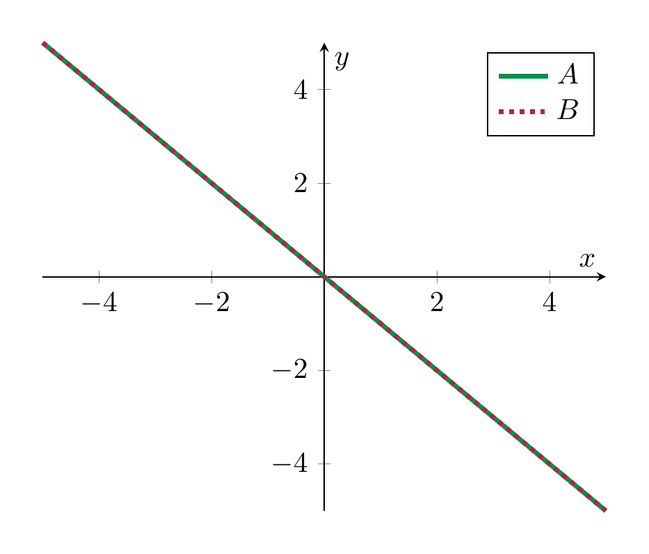
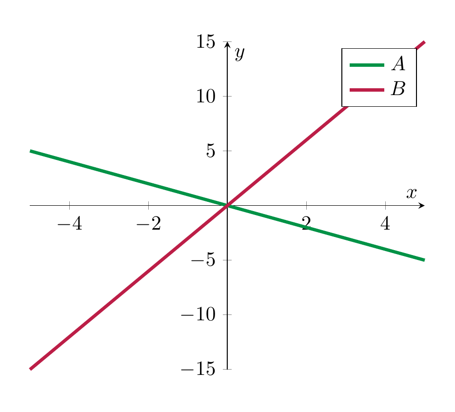

The dimension of a vector space¶
We are all used to referring to the space surrounding us as “3-dimensional”, and refer to a plane as “2-dimensional”. In this section, which is crucial to linear algebra and, by extension to all applications of linear algebra in physics, engineering and mathematics itself, we make this statement precise.
Theorem 3.65
Let \(V\) be a vector space with a basis \(v_1, \dots, v_n\). Then any other basis of \(V\) also consists of \(n\) vectors.
In other words, the number of vectors in a basis does not depend on the basis. (Recall from Example 3.63 that the vectors that form a basis may very well be different.)
Definition 3.66
We say that a vector space \(V\) has dimension \(n\) if there is a basis of \(V\) with \(n\) elements.
Example 3.67
The standard basis of \({\bf R}^n\) consists of \(n\) elements (Example 3.62), so that
The space of polynomials of degree at most \(d\) has a basis \(1, x, x^2, \dots, x^d\). These are \(d+1\) polynomials so that
Remark 3.68 (Related exercises: Exercise 4.46)
If \(V\) has a basis \(v_1, \dots, v_n\) (so that \(\dim V = n\)) and another vector space \(W\) has a basis \(w_1, \dots, w_m\) (and \(\dim W = m)\), then a basis of the direct sum \(V \oplus W\) is given by
These are \(n+m\) vectors, so that
Theorem 3.69
Every vector space has a basis.
Remark 3.70
In this course, we only consider vector spaces with a basis consisting of finitely many vectors, as in Definition 3.61. We call such vector spaces finite-dimensional.
An example of a vector space not having a finite basis (i.e., an infinite-dimensional vector space) is \({\bf R}[x]\) (for which a basis is given by the polynomials \(1, x, x^2, x^3, \dots\)).
The following theorem addresses the question how linearly independent sets can be extended to a basis.
Theorem 3.71 (Related exercises: Exercise 4.38, Exercise 4.44, Exercise 4.16, Exercise 4.11, Exercise 4.46, Exercise 3.8)
- Suppose that some vector space \(V\) is spanned by \(m\) vectors \(v_1, \dots, v_m\) (Definition 3.42). Then a basis of \(V\) can be obtained by removing certain vectors among the \(v_1, \dots, v_m\). In particular, this says that \(V\) has a basis and that
(and so, in particular that \(V\) is finite-dimensional.)
- Every linearly independent set of vectors can be enlarged to a basis by adding appropriate vectors from any given basis of \(V\). (I.e., if \(v_1, \dots, v_n\) are linearly independent, and \(w_1, \dots, w_m\) is any basis of \(V\), then the \(v_1, \dots, v_n\) together with certain vectors among the \(w_1, \dots, w_m\) form a basis.) In particular, if \(v_1, \dots, v_n\) are linearly independent, then
-
If \(W \subset V\) is a subspace, then \(\dim W \le \dim V\). (In particular, if \(V\) is finite-dimensional, then so is \(W\).) Moreover, we have \(\dim W = \dim V\) precisely if \(W = V\).
-
For a subspace \(W \subset V\), any basis of \(W\) can be extended to a basis of \(V\).
Proof. This is proved in any linear algebra textbook, e.g., (Nicholson 1995, Theorem 6.4.1) or (Bottacin 2021, sec. 1.3). ◻
Example 3.72
In \(V = {\bf R}^3\), consider the four vectors \(v_1 = (1,1,-1)\), \(v_2 = (2,0,1)\), \(v_3= (-1,1,-2)\), \(v_4 = (1,2,1)\). We apply Method 3.46 and Method 3.56 by forming the associated matrix and bringing it into row echelon form:
(First step: add certain multiples of the first row to the others, second step: multiply second row by \(- \frac 12\) and add multiples to the third and last row, third step: divide the last row by \(\frac 72\).) We can swap the last two rows and obtain a row echelon matrix. This matrix has three leading ones, so that the four vectors generate \({\bf R}^3\) but are not linearly independent. (We also know \(\dim V = 3\), so these four vectors can not be linearly independent by Theorem 3.712..) According to Theorem 3.711., we can obtain a basis by removing certain vectors among these. Notice that one may not (in general) remove just any arbitrary of the four vectors. In this example,
-
the first three vectors \(v_1, v_2, v_3\) do not form a basis,
-
however \(v_1, v_2, v_4\) do form a basis.
Indeed, this holds since in the above matrix, we remove either the last row, which brings us to
This tells us that these three vectors are (still) not linearly independent (and don’t span \({\bf R}^3\)). By contrast, removing the third row, gives
which has three leading ones, so these three vectors form a basis of \({\bf R}^3\).
Corollary 3.73 (Related exercises: Exercise 3.21, Exercise 3.18, Exercise 3.6)
Let \(V\) be a vector space with \(\dim V = n\). Let \(n\) vectors be given: \(v_1, \dots, v_n\). These vectors are linearly independent if and only if they span \(V\).
Proof. This follows from the theorem above. For example, suppose they span \(V\). If they are not linearly independent, then some \(v_i\) lies in the span of the remaining vectors. Thus \(V\) is the span of all vectors but \(v_i\) so that \(n-1 \ge \dim V\) by Theorem 3.711.. This is a contradiction to our assumption.
The converse implication is proved similarly. ◻
Remark 3.74
If \(V = {\bf R}^n\), then Corollary 3.73 aligns well with Method 3.46 vs. Method 3.56: we consider the matrix
and bring it into row echelon form, denoted \(B\). Note that (\(A\) and) \(B\) are \(n \times n\)-matrices. Thus, the vectors \(v_1, \dots, v_n\) span \({\bf R}^n\) if and only if \(B\) has \(n\) leading ones, which happens if and only if \(v_1, \dots, v_n\) are linearly independent.
Example 3.75 (Related exercises: Exercise 3.20)
Let \(a \in {\bf R}\) be a fixed real number. Consider the vector space \({\bf R}[x]^{\le d}\). The polynomials
are linearly independent. To see this, suppose
Note that \(v_{d}\) has degree \(d\), all the remaining ones have degree \(\le d-1\). Thus, looking at the coefficient for \(x^d\), we see \(a_{d} = 0\). Continuing this, we note that
forces \(a_{d-1}=0\) (by looking at the coefficient of \(x^{d-1}\)). Repeating this argument, one sees that \(a_0 = \dots = a_d = 0\).
We know \(\dim {\bf R}[x]^{\le d} = d+1\) (Example 3.67). Thus, by Corollary 3.73, these polynomials \(v_0, \dots, v_d\) form a basis. According to Proposition 3.64, any polynomial \(f(x)\) of degree \(\le d\) therefore can be uniquely written as
Thus, every polynomial can be expressed as a sum of powers of \(x-a\). (By definition of a polynomial, it can certainly be expressed as a sum of powers of \(x-0 = x\).) The precise values of \(a_d\) are closely related to the Taylor series familiar from analysis.
Dimensions of sums and intersections¶
In this section, we give an answer to Question 3.21 and Question 3.41. Colloquially, the possible failure of \(A + B\) being “as large as possible” (i.e., having the maximum possible dimension, namely \(\dim A + \dim B\)) is closely related to the possible failure of \(A \cap B\) being “as small as possible.” Before stating that, we note another consequence of Theorem 3.71.
Corollary 3.76 (Related exercises: Exercise 3.25)
Suppose \(A, B \subset V\) are two subspaces with \(\dim A = m\) and \(\dim B = n\). Then
(Here, at the left + denotes the sum of the two subspaces (Definition 3.36), while at the right it is the sum of the two dimensions.)
Proof. If \(v_1, \dots, v_m\) is a basis of \(A\) and \(w_1, \dots, w_n\) is a basis of \(B\), then they in particular span \(A\), resp. \(B\). Thus, \(A + B\) is spanned by
These are \(m+n\) vectors. According to Theorem 3.711., this implies
◻
Theorem 3.77 (Related exercises: Exercise 4.46, Exercise 3.25, Exercise 3.26)
Suppose \(A, B \subset V\) are two subspaces of a vector space. Then
(3.78)
This is a special case of a more general theorem, the so-called rank-nullity theorem (Theorem 4.26). We illustrate it at the hand of subspaces in \(V = {\bf R}^2\). If \(A \subset V\) is a subspace, then exactly one of the following three cases occurs:
-
\(\dim A = 0\). This means that \(A\) just consists of the zero vector: \(A = \{ 0 \}\).
-
\(\dim A = 1\). This means that there is a basis of \(A\) consisting of a single vector \(v \in A\). Since \(v\) is linearly independent, we have \(v \ne 0\) (otherwise \(1 \cdot v = 0\) is a non-trivial linear combination giving the zero vector). Since \(v\) spans \(A\), this means \(A = \{ a v \ | \ a \in {\bf R}\}\). Thus, \(A\) is the line spanned by the (non-zero) vector \(v\).
-
\(\dim A = 2\). In this case we necessarily have \(A = {\bf R}^2\) by Theorem 3.713..
Of course, for another subspace \(B\) the same three cases apply. If \(A = \{0\}\), then \(A \cap B = \{0 \}\) and \(A + B = B\), so in this case the dimension formula Equation (3.78) just reads
which does not give anything interesting. Similarly, if \(A = {\bf R}^2\), then \(A \cap B = B\) and \(A + B = {\bf R}^2\), so the dimension formula reads
Again, this is tautological. The interesting case is therefore when \(\dim A = 1\) and, by symmetry, \(\dim B = 1\). Thus both \(A\) and \(B\) are lines, passing through the origin, in \({\bf R}^2\). We distinguish two cases:
- \(A = B\). In this case \(A \cap B = A\), \(A + B = A\), so the formula reads
which is true.
- \(A \ne B\). In this case \(A \cap B = \{ 0 \}\), since the lines are distinct and therefore only interesect at the origin. Then the formula says
Thus \(\dim (A+B) = 2\), which means that \(A + B = {\bf R}^2\), again using Theorem 3.713..
Here is a picture of the two cases:
| \(A = B\) | \(A \ne B\) |
 |
 |
Definition 3.79
Let \(A, B \subset V\) be two subspaces. We say “the sum \(A + B\) is a direct sum” if \(\dim A + \dim B = \dim A + B\).
In other words, \(\dim (A + B)\) needs to be as large as possible. In the example of two lines, i.e., \(\dim A = \dim B = 1\), the sum is direct precisely if \(A + B = {\bf R}^2\).
Example 3.80
In \(V = {\bf R}^3\), consider subspaces \(A, B \subset {\bf R}^3\) with \(\dim A =1\) and \(\dim B = 2\). Thus, geometrically, \(A\) is a line passing through the origin and \(B\) is a plane passing through the origin. We have
This means that
We distinguish two cases:
- \(A \subset B\). Equivalently, \(A \cap B = A\) or, yet equivalently,
- \(A \nsubset B\). In this case \(A \cap B \subsetneq A\). Since \(A \cap B\) is a subspace of strictly smaller dimension, this implies \(A \cap B = \{ 0\}\). Thus,
To summarize, a line \(A\) and a plane \(B\) (both passing through the origin) in \({\bf R}^3\) intersect either in a point or in a line.
Example 3.81
Consider \(V={\bf R}^3\) and two subspaces \(A, B \subset {\bf R}^3\) of dimension 2. Then the formula reads
We have in any event \(A, B \subset A + B \subset {\bf R}^3\), which implies
We consider two cases:
-
\(A = B\). In this case \(A \cap B = A\) and \(A + B = A\), which both have dimension 2.
-
\(A \ne B\). In this case \(A \cap B \subsetneq A\), so \(A \cap B\) has dimension \(< 2\). This means that \(\dim (A+B) = 3\), and therefore
We summarize this as follows: two planes \(A\), \(B\) passing through the origin in \({\bf R}^3\) intersect either in a plane (this happens precisely if \(A = B\)), or they interesect in a line (this happens precisely if \(A \ne B\)).
If the ambient vector space has dimension \(\ge 4\), and \(\dim A, \dim B \ge 2\), then the possible dimensions of \(\dim (A \cap B)\) and \(\dim (A +B)\) are more varied, so we refrain from making a similar list.